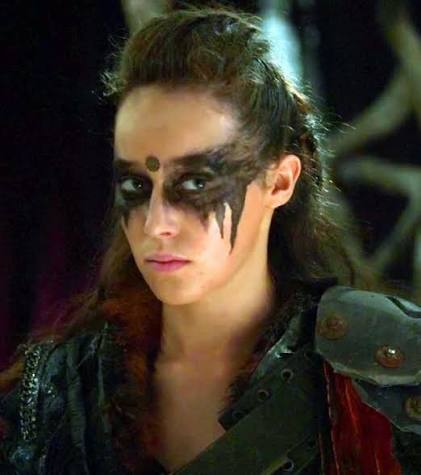
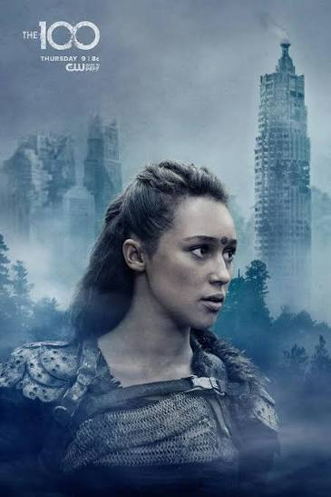
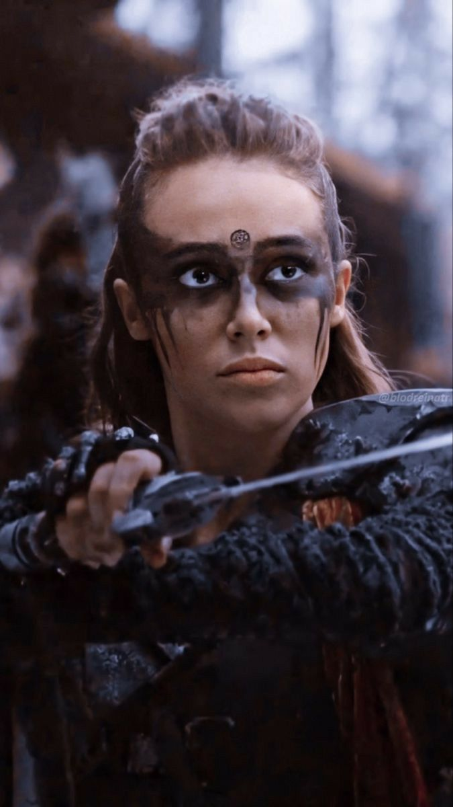

Biografia Del Personaje
fue una líder visionaria de la serie Los 100.Destacó por su frialdad estratégica, su búsqueda de la paz y su icónico lema: "just drein jus daun"(la sangre pide sangre), el cual intentó cambiar para romper el ciclo de violencia.
Su liderazgo unió por primera vez a tribus históricamente enemigas para enfrentar amenazas comunes, demostrando una sabiduría superior a su edad.
Galeria de la Comandante



Aspectos Destacados
- Origen:Clan del Bosque (Trikru).
- Titulo:Comandante (Heda).
- Alianza:Creadora de la Coalicion de los 12 Clanes.
- Relacion Clave:Clarke Griffin (